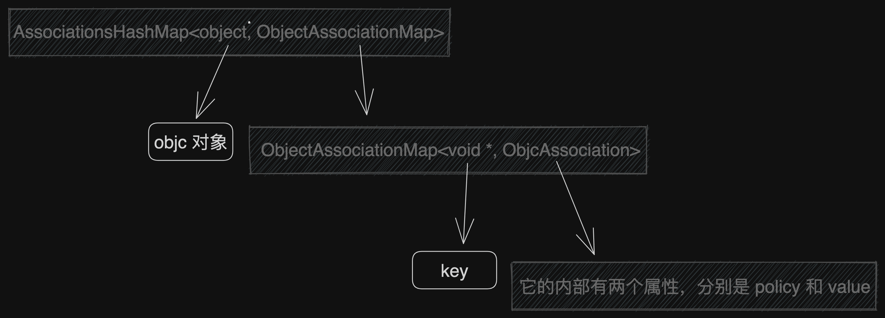
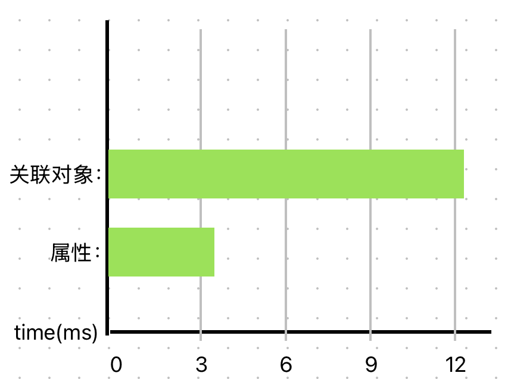

由 布多(budo) 发布于 2025-04-07
前言
在 iOS 开发中，关联对象（Associated Objects）是一种强大的运行时特性，它允许我们在 Category 中为已有的类动态添加”属性”。众所周知，Category 的一个重要限制是无法直接添加实例变量，这是因为 Category 是在运行时动态加载的，而类的内存布局（包括实例变量的大小和偏移量）必须在编译时就确定下来。关联对象通过 Runtime 机制巧妙地绕过了这一限制，让我们能够在运行时为对象动态关联任意值，从而实现类似实例变量的效果。
虽然网上关于如何使用关联对象的教程很多，但大多数都停留在使用层面，对其内部实现原理鲜有深入探讨。本文将从 Runtime 源码的角度，和大家一起深入剖析关联对象的底层实现原理，包括其内部数据结构、内存管理机制、线程安全性以及性能考量等关键细节。通过本文，你将全面了解关联对象的工作原理，从而能够更好地在实际开发中运用这一技术。为了能够更好地理解本文内容，建议读者已经对关联对象的基本使用有所了解。
关联对象的底层原理
要理解关联对象的底层原理，我们需要从 Runtime 提供的三个核心 API 开始：
- objc_setAssociatedObject - 用于设置关联对象
- objc_getAssociatedObject - 用于获取关联对象
- objc_removeAssociatedObjects - 用于移除对象的所有关联对象
这三个 API 共同构成了关联对象技术的基础，它们分别负责关联对象的创建、访问和清理工作。让我们先从 objc_setAssociatedObject 的实现开始，深入了解关联对象是如何被存储和管理的。
📝 本文使用的 Runtime 版本是 objc4-906。为了方便阅读，我对代码样式和排版略作了修改，并删减了一些不影响主逻辑的冗余代码。
🔧 我在 这里 维护了一个可以直接运行调试的 Runtime 项目，欢迎大家下载调试源码。
如何添加关联对象
当我们调用 objc_setAssociatedObject 函数来设置关联对象时，Runtime 系统会执行一系列复杂的操作来确保关联对象被正确地存储和管理。这个过程涉及到内存管理、线程安全以及哈希表操作等多个关键环节。让我们通过分析源码，一步步揭开关联对象添加过程的神秘面纱。相关源码整理后如下所示（如果觉得代码太长可以先跳过，后面会有详细解释）：
void |
通过分析上述源码实现，我们可以清晰地看到关联对象的核心存储结构，一个精心设计的双层哈希表系统：
- 第一层哈希表(AssociationsHashMap)：以对象的内存地址(
即 self)为键，映射到该对象的所有关联对象存储表； - 第二层哈希表(ObjectAssociationMap)：以传入的key为键，存储具体的关联对象信息。
值得注意的是，系统并不是直接存储传入的 value 对象，而是将其封装在一 个ObjcAssociation 类型中。这个结构体包含两个关键信息：
- value: 实际存储的关联对象；
- policy: 内存管理策略(如retain、copy等)。
这种设计既保证了关联对象的快速存取，又实现了灵活的内存管理。
我绘制了一张结构示意图如下所示：

让我们以一个具体的例子来说明这个存储结构：
以 objc_setAssociatedObject(self, @selector(name), @"budo", OBJC_ASSOCIATION_COPY_NONATOMIC) 这行代码为例。
- 第一个参数
self对应第一层哈希表(AssociationsHashMap)的键； - 第二个参数
@selector(name)对应第二层哈希表(ObjectAssociationMap)的键； - 第三个参数
@"budo"和第四个参数OBJC_ASSOCIATION_COPY_NONATOMIC则被包装成一个 ObjcAssociation 对象。
另外，关于内存管理修饰符的一个重要发现：OBJC_ASSOCIATION_RETAIN_NONATOMIC 和 OBJC_ASSOCIATION_RETAIN 在实际运行时的行为是完全一致的，从上面的源码中也可以发现这一点，我写了一个测试，代码在 这里，结果显示 OBJC_ASSOCIATION_RETAIN_NONATOMIC 和 OBJC_ASSOCIATION_RETAIN 在实际运行时的行为是完全一致的。这是因为关联对象的所有操作都会获取全局锁来确保线程安全，所以无论是否指定 NONATOMIC，都会得到相同级别的同步保护。这一点与属性修饰符 atomic/nonatomic 的行为有所不同。
如何获取关联对象
获取关联对象的值，是通过 objc_getAssociatedObject 函数实现的。这个函数内部会调用 _object_get_associative_reference 来完成实际的获取操作。整个过程也是围绕着双层哈希表进行，相关的源码整理后如下所示：
id objc_getAssociatedObject(id object, const void *key) { |
从以上代码可以看出，获取关联对象的过程相对简单，主要包含以下几个步骤：
- 首先获取全局锁以确保线程安全；
- 通过 object 作为键在第一层哈希表(AssociationsHashMap)中查找对应的内层哈希表；
- 如果找到内层表，则使用 key 作为键在第二层哈希表(ObjectAssociationMap)中查找 ObjcAssociation 对象；
- 如果找到 ObjcAssociation 对象，则根据其内存管理策略对 value 执行 retain 操作；
- 最后将 value 加入自动释放池并返回。
整个过程中的关键是双层哈希表的设计，这种设计让我们能够高效地通过对象和键的组合来存取关联值。同时，通过 RAII 技术和自动释放池的使用，保证了内存管理的安全性。
如何移除所有关联对象
关联对象的移除有两种方式：移除单个关联值和移除所有关联值。
对于单个关联值的移除，我们可以通过调用 objc_setAssociatedObject 函数并将 value 参数设置为 nil 来实现。这种方式实际上是复用了关联对象的设置逻辑，当 value 为 nil 时，Runtime 系统会自动清理对应的关联值。具体的实现细节可以参考上面的章节：如何添加关联对象。
而本节我们将重点关注如何通过 objc_removeAssociatedObjects 函数一次性移除对象的所有关联值。这个函数通常在对象被释放时由 Runtime 系统自动调用，当然我们也可以根据需要手动调用它。让我们一起来分析这个函数的具体实现：
void objc_removeAssociatedObjects(id object) { |
释放所有关联对象的逻辑比较简单，但需要注意一些细节，它的主要流程如下：
- 获取全局关联表（AssociationsHashMap），然后根据参数 object(即 self) 获取对应的内层表（ObjectAssociationMap）；
- 把内层表中的关联对象存储到一个临时变量 refs 中，这样做是为了避免在遍历过程中修改哈希表。
- 检查是否存在 OBJC_ASSOCIATION_SYSTEM_OBJECT 类型的关联对象。如果存在且不是由 dealloc 触发的，则需要将这些对象重新插入到内层表中，以确保它们能在最后被释放。
- 如果内层表中没有重新插入的对象，则从全局关联表中移除 object 对应的内层表。
- 分两步释放关联对象：先释放普通关联对象，再释放 OBJC_ASSOCIATION_SYSTEM_OBJECT 类型的关联对象。这种设计可能是为了确保系统对象在整个释放流程中保持可用状态。
整个过程都是在全局锁的保护下进行的，这保证了线程安全，但也意味着大量使用关联对象可能会影响性能。
相关疑问与注意事项
如何在关联对象中使用 weak 属性
关联对象默认是不支持 weak 属性的。这是因为 weak 特性的实现需要能够获取到属性指针的地址，以便在对象释放时将指针置为 nil。而关联对象是通过哈希表存储的，我们无法获取到存储值的内存地址，故而不能直接使用 weak 特性。
如果你确实需要在关联对象中实现类似 weak 的效果，有以下几种替代方案：
- 使用中间对象：创建一个中间对象，将 weak 属性存储在这个对象中，然后通过这个中间对象来间接实现 weak 效果；
- 使用 NSHashTable 等弱引用容器；
- 手动实现引用计数管理。
关于“中间对象”的具体实现方案和 weak 指针的更多详细内容，可以参考我的另一篇文章：揭开 iOS 中 weak 指针的神秘面纱：从原理到实践
关联对象为什么不能直接添加成员变量
这个问题需要从两个角度来理解：技术实现层面和设计目的层面。
从技术实现层面来说，类的内存布局（包括实例变量的大小和偏移量）必须在编译时就确定下来。一旦类被编译完成，其内存布局就已经固定，无法再动态地添加实例变量。因为分类不仅适用于我们自己项目中的类，更重要的是还包括系统框架和第三方库中的类。
从设计目的层面来说，关联对象的设计初衷就是为了在不改变类内存布局的情况下，实现动态地为对象添加存储能力。这使得我们可以：
- 在 Category 中添加”属性”，突破 Category 的存储限制；
- 为系统类添加自定义属性，而无需继承；
- 在运行时动态地为任意对象关联数据。
如果关联对象的实现被限制为只能给当前项目中的类添加属性，那么理论上确实可以通过编译器在编译期间修改类的内存布局来实现。但这样就失去了关联对象最重要的特性 - 运行时动态性，也无法实现对系统和三方库中的类进行扩展。
如果你想了解更多 Category 方面的知识，可以参考我的另一篇文章：2024 再探ObjC-Category：动态特性与运行时实现的极致之美。
关联对象和真正的属性有什么区别
虽然关联对象在使用上与普通属性非常相似，但它们在实现机制和性能特征上存在显著差异：
实现机制：
- 属性是在编译时就确定的实例变量，直接存储在对象的内存布局中。
- 关联对象是运行时动态添加的，通过全局哈希表来存储和管理。
性能开销：
- 属性访问只需要一次简单的内存偏移计算。
- 关联对象需要哈希表查找、加解锁等多个操作步骤，性能开销较大，我在 iPhone 8 Plus(iOS15.8.3) 设备上做了一个测试，代码在 这里，结果显示属性比关联对象快了 4 倍左右，这里只测试了单线程的情况，不能反映多线程下的实际性能，结果只当作一个参考。

线程安全：
- iOS 中的属性一般是非原子的(nonatomic)，多线程访问需要手动加锁。
- 关联对象通过全局锁保证了操作的原子性。
内存管理：
- 属性的内存管理由编译器自动处理，通过 strong、weak 等属性修饰符指定。
- 关联对象需要手动指定内存管理策略，且不支持 weak 引用。
使用场景：
- 属性适用于类的核心功能实现。
- 关联对象主要用于运行时动态扩展功能，尤其是在分类中添加存储能力。
因此，虽然关联对象为我们提供了强大的动态扩展能力，但在性能要求较高的场景下，应优先考虑使用属性来实现。
关联对象的释放时机
关联对象的释放时机与对象本身的释放时机完全一致。当一个对象被释放时，Runtime 系统会自动调用 _object_remove_associations 函数来移除该对象的所有关联对象(和手动调用 objc_removeAssociatedObjects 函数效果类似，除了第二个参数值不一样)。整个调用链路如下所示：
dealloc |
使用关联对象时的注意事项
虽然关联对象为我们提供了强大的动态扩展能力，但由于其特殊的实现机制，在实际使用过程中我们仍需要注意以下几个关键点，以避免潜在的问题：
内存管理策略的选择
- 谨慎使用 OBJC_ASSOCIATION_ASSIGN：这种策略不会持有对象，容易造成野指针崩溃。仅在以下特殊场景考虑使用：
- 关联对象是 Tagged Pointer（如小整数的 NSNumber）；
- 关联对象与被关联对象具有相同的生命周期；
- 需要打破循环引用的场景。
- 即使是 Tagged Pointer 对象，也建议使用带有 RETAIN 或 COPY 的内存管理策略，因为 Runtime 系统内部会自动处理 Tagged Pointer 的内存管理。
- 谨慎使用 OBJC_ASSOCIATION_ASSIGN：这种策略不会持有对象，容易造成野指针崩溃。仅在以下特殊场景考虑使用：
性能考量：关联对象的存取涉及全局哈希表操作和加锁，性能开销比直接访问实例变量大；所以不要在性能敏感的代码路径中频繁操作关联对象；可以考虑使用缓存机制减少访问频率。
线程安全：关联对象只保证了读写操作是原子的，但多线程访问时仍需注意数据一致性（例如多线程对可变对象的修改）；复杂操作时建议额外加锁保护。
内存管理
- 在对象释放时，其关联对象会被自动移除；
- 使用 RETAIN/COPY 策略时要注意避免循环引用；
- 如果确实需要 weak 引用效果，可以考虑使用 “中间对象” 或 NSHashTable 等方案。
调试与维护
- 关联对象不会出现在类的属性列表中，调试时需要特别注意；
- 建议统一管理关联对象的 key，避免冲突；
- 适当添加注释说明关联对象的用途和生命周期管理方式。
技术总结
通过对关联对象底层实现原理的深入分析，我们可以得出以下关键结论：
存储结构
- 关联对象的底层采用双层哈希表结构实现，保证了快速的存取效率；
- 第一层以对象地址为键，映射到该对象的所有关联对象；
- 第二层以关联键为索引，存储具体的关联值和内存管理策略。
线程安全
- 关联对象内部通过全局锁保证了存取操作的原子性；
- 采用 RAII 技术自动管理锁的获取和释放；
- 但是复杂操作时仍需考虑额外的同步机制。
内存管理
- 支持 retain/copy/assign 多种内存管理策略，但不支持 weak 引用；
- 自动处理关联对象的生命周期，与对象的生命周期一致；
- 通过 ObjcAssociation 封装实现统一的内存管理。
关联对象技术为 Category 突破了存储限制，但也带来了额外的复杂性和性能开销。在实际开发中，应当根据具体场景权衡使用，合理使用这把 “双刃剑”。